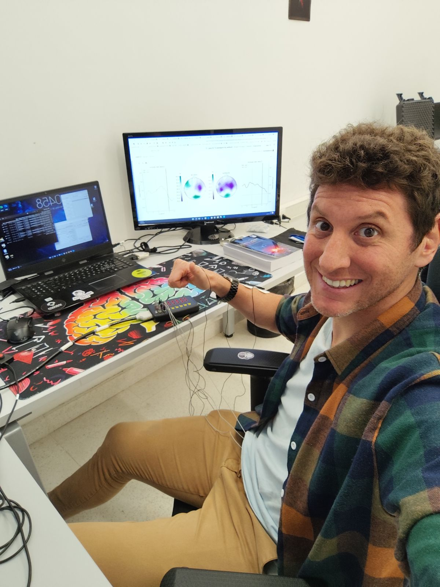
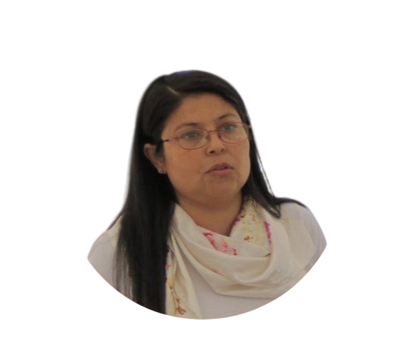
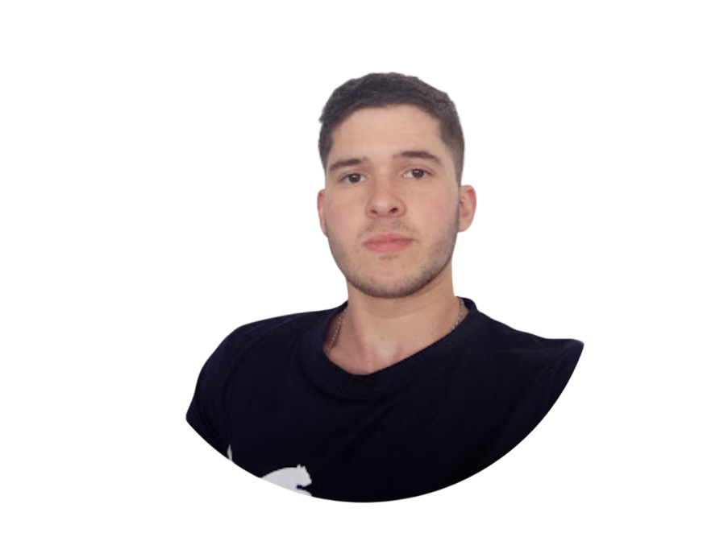
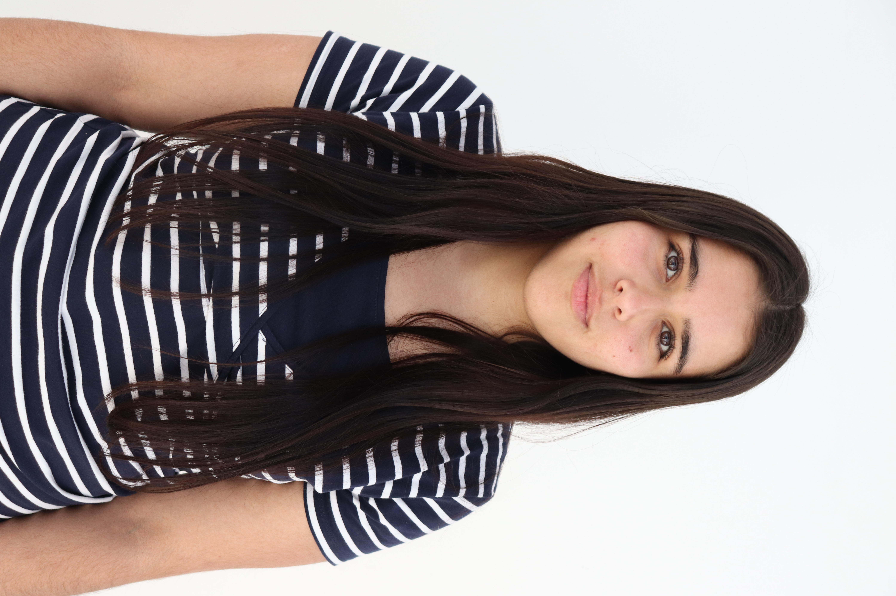
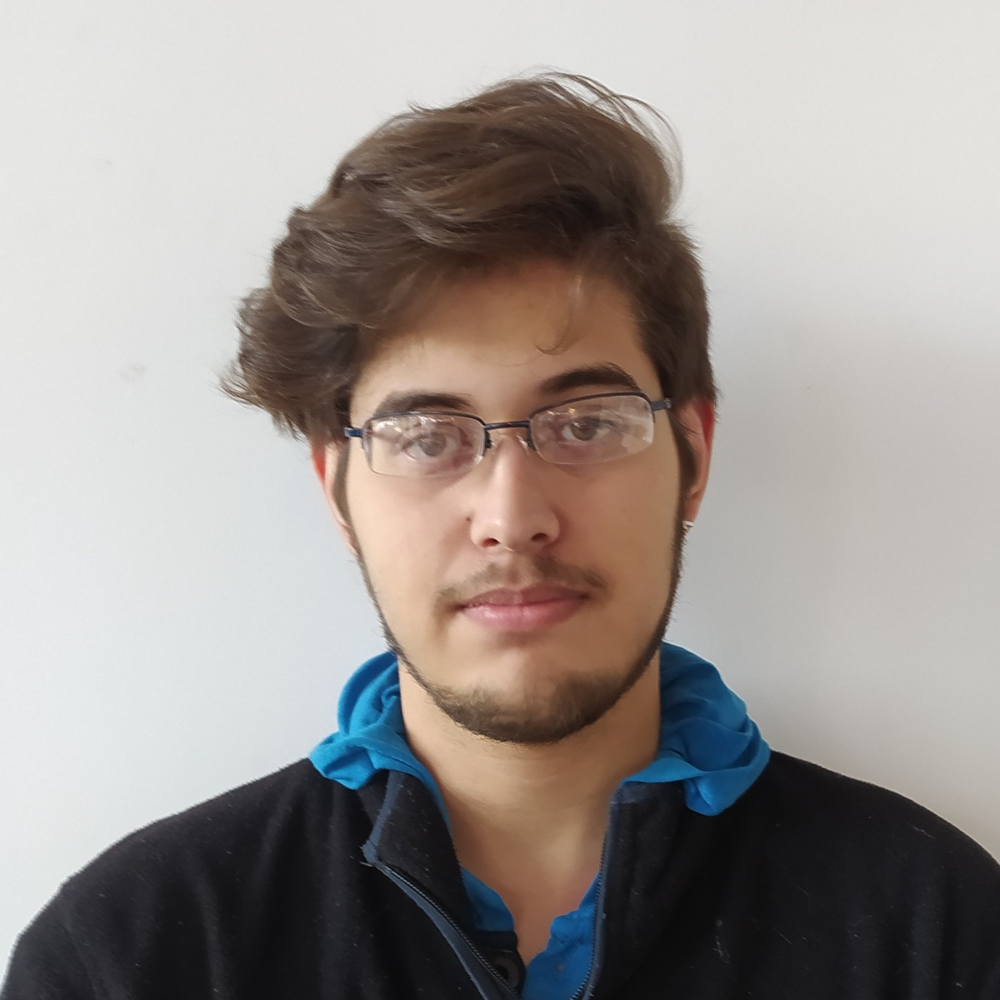

Miembros
El Nuero-IA LAB cuenta -por ahora- con un equipo pequeño de docentes y estudiantes de grado y posgrado. La idea es ir sumando gente, ¿queres participar y/o ser parte del equipo? ¡SUMATE!
Director

MSc. Lucas Baldezzari
Fundador y director del Neuro-IA LabProfesor adjunto de Ingeniería Biomédica en UTEC. Bioingeniero (UNER), Magíster en Ciencia de Datos (UTEC/MIT) y candidato a Doctor en Bioingeniería (UNER). Su trabajo se enfoca en el estudio de factibilidad de decodificación de escritura imaginada mediante EEG para interfaces cerebro-computadora.
cvuyDocentes investigadores

Dra. Graciela Salum
Directora del Departamento Académico de Mecatrónica, Logística y Biomédica, UTECMás de 20 años de experiencia en docencia, investigación, gestión universitaria y desarrollo tecnológico. Ex Vicerrectora en Yachay Tech (Ecuador). Sus intereses de investigación incluyen ingeniería biomédica, efectos de la radiación solar e IA aplicada al diagnóstico médico.
Estudiante de maestría

Ing. Emiliano Alvarez
Estudiante de maestría en Ingeniería Biomédica (UNER)Egresado de Ingeniería Biomédica (UTEC) y docente en UTEC. Trabaja en el desarrollo de un ecosistema multimodal EEG-fNIRS para un dataset abierto, y participa como investigador en PROY-NEUROIA-005 (habla imaginada a partir de EEG de superficie y fNIRS).
cvuyTecnólogos y estudiantes de grado

Victoria Maneiro
Tecnóloga en Ingeniería Biomédica, UTECEnfocada en el procesamiento de señales biomédicas y la neurociencia. Responsable del diseño del protocolo experimental de PROY-NEUROIA-002 (proyecto de titulación aprobado).

Agustín Quintana
Tecnólogo en Ingeniería Biomédica, UTECIntereses en Python, procesamiento de señales e ingeniería clínica. Participa en PROY-NEUROIA-008, desarrollo de software de adquisición y análisis de señales biomédicas.
¿Querés formar parte del equipo?
Recibimos estudiantes de grado y posgrado interesados en neurociencias, señales biomédicas e IA aplicada.